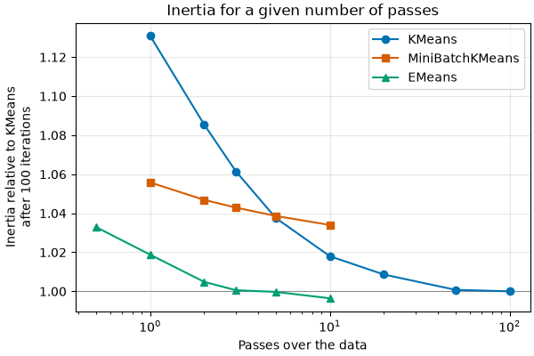

User guide#
EMeans minimizes the inertia, the sum of the squared
distances of the samples to their closest center, like
KMeans and MiniBatchKMeans
(see K-means). It implements e-means [1], which typically gets close to
the inertia of Lloyd’s algorithm in a few passes over the data instead of tens
of iterations.
What e-means does#
E-means is a mini-batch variant of k-means in which each center is the ratio of two exponential moving averages, computed over the mini-batches: the running sum \(S_j\) and the running weight \(N_j\) of the samples assigned to cluster \(j\). With \(s_j\) and \(n_j\) the sum and the number of the samples of a mini-batch assigned to the cluster, and \(\alpha\) the step size, each mini-batch updates them as:
With a single mini-batch holding all the samples and \(\alpha = 1\), this is an iteration of Lloyd’s algorithm. Around this update:
The step size is shared by all the centers and follows a cosine decay, from its initial value to a tenth of it. In
MiniBatchKMeans, each center has its own learning rate, the inverse of the number of samples it has seen.Every 5 mini-batches, the dead clusters, whose running weight is below a tenth of the mean one, are revived: each takes half of a heavier cluster, which is split in two. Clusters are not revived on data with 1 or 2 features.
At the end of the last epoch, each center is set to the mean of the samples assigned to it during that epoch.
labels_andinertia_are then computed with one more pass over the data, so that they match the final centers andpredict.
The batch size and the initial step size are not parameters. They are given by
scaling laws that the authors of e-means fitted as functions of the number of
samples, of clusters and of epochs. The batch size grows almost linearly with
the number of samples, and is 8 times smaller for data with up to 16 features. It is stored in batch_size_ after a fit.
Choosing n_epochs#
n_epochs, the number of passes over the data, is the parameter that trades
fit time for inertia. The authors report that e-means goes below the loss of
Lloyd’s algorithm after 25 iterations in 1.4 to 2.6 passes over the data, on
embedding datasets.

In this example, 2 to
3 epochs reach the inertia that KMeans reaches after tens of iterations, and
the default of 5 epochs reaches its inertia after 100 iterations.
Start from the default,
n_epochs=5. Lower it to 2 or 3 when the fit time matters more than the last fraction of a percent of inertia, and raise it to compare: more epochs usually give a lower inertia, but not always.n_epochscan be fractional. Withn_epochs=2.5, the half pass comes before the last epoch, which is always a full pass. Withn_epochs=0.5, the fit sees half of the samples once.n_epochsis a fixed budget: there is no convergence criterion and no early stopping. The batch size and the schedule of the step size depend on it, so a fit with more epochs is not the continuation of a fit with fewer.
When to use EMeans#
Rather than KMeans, when an iteration of Lloyd’s algorithm is expensive,
that is with many samples. An epoch of EMeans has the complexity of an
iteration of Lloyd’s algorithm, and a few epochs do the work of tens of
iterations. Prefer KMeans:
on small datasets, which it fits in a negligible time;
with sample weights, which
EMeansdoes not support yet;when the best clustering has many small clusters. Reviving the dead clusters, whose running weight is below a tenth of the mean one, pushes towards balanced clusters, so
EMeanscan end above the inertia ofKMeanson such data;when the centers must be a local minimum of the inertia, where an iteration of Lloyd’s algorithm no longer moves them.
EMeansstops after its budget, and its centers are not such a minimum. Iterations of Lloyd’s algorithm from them, withKMeans(n_clusters, init=emeans.cluster_centers_), can only lower the inertia.
Rather than MiniBatchKMeans, when the data fits in memory: for the same
number of passes, EMeans reaches a lower inertia in the example above.
MiniBatchKMeans remains the choice for data that arrives as a stream or does
not fit in memory, with its partial_fit. Each epoch of EMeans goes through
a permutation of the whole dataset.
Initialization#
init can be:
"random", the default:n_clusterssamples drawn at random;"k-means||": scalable k-means++ [2]. A few rounds over the data sample candidates far from the candidates so far, then a weighted k-means++ on the candidates gives the centers. It costs about as much as 2 to 3 epochs;"k-means++": greedy k-means++, as insklearn.cluster.kmeans_plusplus(). It draws the centers one after the other and is mostly there for experimenting:"k-means||"gives a similar inertia much faster;an array of centers, or a callable returning one.
The time of a better initialization can also be spent on more epochs: compare both on your data.
Input data#
X is a dense array or a sparse CSR matrix. The other sparse formats are
converted to CSR. float32 and float64 data are used as they are, and float32
is faster. The other dtypes are converted to float64.
GPU and array API inputs#
EMeans also fits on PyTorch tensors and CuPy arrays (and on the arrays of
other libraries that follow the array API), on their device. As for the scikit-learn
estimators, this must be enabled with array_api_dispatch=True, and with
SCIPY_ARRAY_API=1 in the environment (see Array API support (experimental)):
import sklearn
import torch
from sklearn_emeans import EMeans
X = torch.asarray(X_numpy, device="mps") # or "cuda", "xpu"
with sklearn.config_context(array_api_dispatch=True):
emeans = EMeans(n_clusters=1024).fit(X)
labels = emeans.predict(X)
emeans.cluster_centers_ # a tensor on the device of X
Only dense inputs are supported.
The random numbers are drawn on the host, in the same order as for NumPy inputs, but the results are not identical: the rounding differs, and a sample that changes cluster changes the next steps. On devices without float64 (Apple GPUs), all the computations are in float32.
On GPUs, two fits with the same
random_statecan give different results (seen with PyTorch on CUDA, where the inertia changed by up to 1%): the sums of the samples of each cluster are added in an order that changes from one run to the next. With PyTorch,torch.use_deterministic_algorithms(True)makes the fits reproducible. They were 10-60% slower with it on an NVIDIA L4.With
init="k-means||", the sampling rounds run on the device and the final k-means++ on the candidates runs on the host.init="k-means++"copies the data to the host.
Complexity and parallelism#
This section is about NumPy and SciPy inputs. Array API inputs are computed by their library, on their device.
A fit makes n_epochs passes over the data, each with the complexity of an
iteration of Lloyd’s algorithm, \(O(n_{samples} \, n_{clusters} \,
n_{features})\) on dense data, and a last one to compute labels_ and
inertia_. C-contiguous data is not copied, and the additional memory is
\(O(n_{clusters} \, n_{features} + n_{samples})\).
The samples of a mini-batch are assigned to their closest center in chunks of
256 samples, in parallel with OpenMP, then the centers are updated in parallel.
EMeans uses all the physical cores, or the number of threads set by the
OMP_NUM_THREADS environment variable or by
threadpoolctl.threadpool_limits(limits=n_threads, user_api="openmp"), and at most
one thread per chunk of a mini-batch: small mini-batches run on few threads.
The result does not depend on the number of threads.